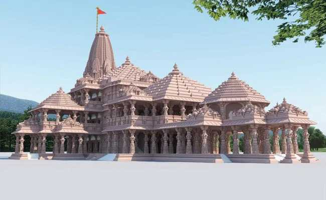
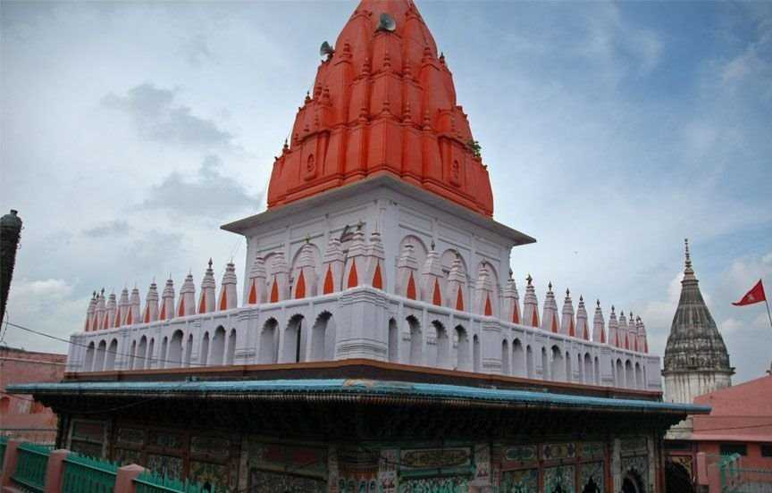
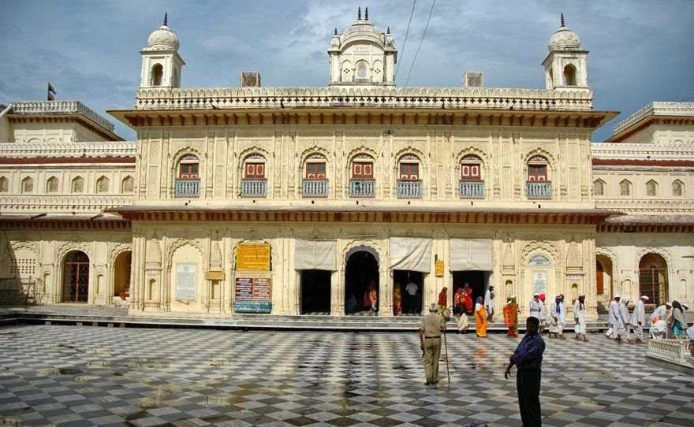

Ayodhya Tourism
"The birthplace of Lord Rama"
Location : Uttarpradesh-India
Often referred to as the birthplace of Lord Rama, Ayodhya is deeply entrenched in Hindu mythology and spirituality.
Nestled along the banks of the sacred Sarayu River in Uttar Pradesh, Ayodhya stands first among the seven most sacred
pilgrimage sites for Hindus. The name "Ayodhya" itself is deeply intertwined with the Ramayana in which it was known as
the capital of the ancient Kosala Kingdom. The Ramayana immortalized Ayodhya through its association with the epic tale
of Lord Rama. This ancient city holds immense significance for millions of Hindus, serving as a pilgrimage site where
devotees pay homage to Lord Rama and seek spiritual solace.
Best Time: October to March
Places To Visit In Kedarnath

Ram Janmabhoomi |

Hanuman Garhi, Ayodhya |

Kanak Bhawan |